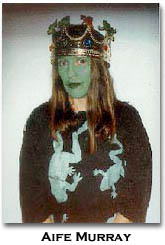
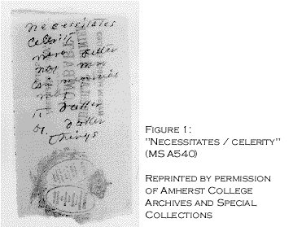
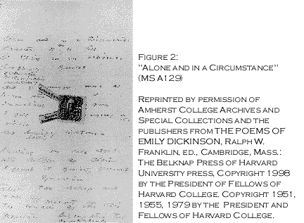
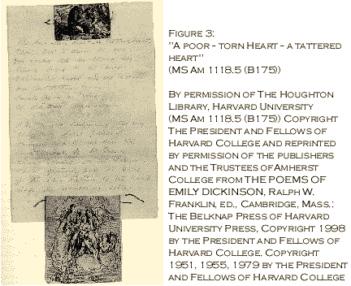
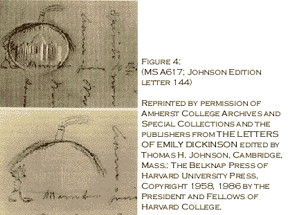

"send me something drawen / on paper" (1)
by Aife Murray
That Dickinson's poems – in original manuscript form – have been found jotted on the back of recipes, on used envelopes, and brown paper bags, suggests that she often was caught in the midst of domestic labors, when the muse suggested an idea. Or, if interrupted in her writing elsewhere, she continued to revise and make notes while carrying out a kitchen-side task. [See Figure 1, writing on a chocolate bar wrapper]

Jeanne Holland situates these particular "household technologies" – the use of scraps and ephemera in her "pantry writing" – as increased and particularly evident from the late 1860s onward (Holland 1994, 150, 155). (2) As this coincides with maid-of-all-work Margaret Maher's arrival and tenure (1869-1899), it suggests that because of her maid's dependable efforts, Dickinson was able to keep her literary work more present, as she went between desk and pantry, writing and skimming milk. (3) And it also suggests that the cross-class collaborations in the Homestead kitchen were played out in the eclectic fusion of materials.
Dickinson also created hybrids by mixing her writing with postage stamps, flowers, pine needles, and with text and illustrations cut from her books and popular magazines. [See Figure 2, response to a postage stamp, and Figure 3, a mixed media poem.]

Martha Nell Smith has focused on the cartooning evident in some of Dickinson's correspondence and poetry. (4) [See Figure 4] Holland believes that mixing forms may have been a strategy Dickinson used for keeping her verse alive. By creating these hybrid forms, and by practicing the folk economies of the town – exchanges of food and labor – Dickinson gave equal value to daily life and creative production (Holland 1994, 152). The means and authority achieved in the domestic realm were carried into Dickinson's literary work.

The power of hybrids lies in their refusal to be pinned down. Hybrids resist "domestication," or even labeling, which acts as a constraint. The mix of forms function as an opening in the text and its meaning. In Dickinson's work the site of the domestic-familiar is de-familiarized through her hybrid contractions. This allows the writer (and reader) to move to the terrain of the unfamiliar, the unmanageable, where the deep discoveries in writing are made (Gibbons 1989, 105). Operating at these borders, where her media and peopled-world meet, allows Dickinson to practice a "freedom of direction" to challenge hierarchies, and rename experience in her own image (Quartermain 1992, 173).
Dickinson's hybrids also act as a form of signifying – as in the African-American trope – where there's a gap between what the words (and materials) say and what they mean. This creates a tension in motion that conveys the poem as still actively ongoing (Fishkin 1993, 60). Poet and scholar Juliana Spahr argues that hybrids leave loopholes in the text that undermine authority. She says "[a] border is the authority of place. But as one crosses it, and someone always is, it is a place of the liminal defined by the back and forth." (Spahr 1994, 289-290).
Writing on chocolate bar wrappers or placing stamps within her poems captures two opposable gestures. Mixing what is permanent (literature) with ephemera (housework, conversation, daily life), allows Dickinson to highlight their juncture and rupture (Phillips 1995, 173). Her hybrid forms encompass chance or fleeting moments. Inherent in her literary work is both the seamlessness between domesticity and writing, between her life and that of her servants and the abutment, the defining border.
Dickinson's mix of high and low art forms – the literary with kitchen ephemera – tracks the shifting realities in 19th-century America, specifically agrarian Amherst, where the old forms of communal self-reliance and mixing of classes were giving way to the "vagaries of the market" and hardening class lines (Holland 1994, 154). Mixed forms or hybrids denote the junctures and ruptures apparent in Dickinson's own (cross-class, cross-cultural) kitchen, not unlike the way mixed compositions in today's writing and art scene "score" similar effects in the late 20th-century.
Commenting on the usage of hybrids in the contemporary American poetry scene, poet Leslie Scalapino, has observed that "those without social power are less inclined to see reality as orderly; for example, less inclined to see the social construction as unified" (Osman and Spahr 1996, 4). (5) The hybrids become a "mediative instrument" that recognizes silence in the ephemera and voice in the literary (Creighton 1996, 38).
In 19th-century New England, Dickinson's work encodes the border as juncture, the fringe, the simultaneously viewed past and present (Gómez-Peña, 44). In a nation without a way of talking about hybrids – holding a "horror of, as well as fascination for, the cultural hybrid, for mestizaje" – Dickinson's diverse manuscripts construct and describe an American multiplicity (Creighton 1996, 86).
We can, if we choose, read these mixed forms as a way that Dickinson complicates the notions of literature and domesticity to revise "the borders marking what constitutes 'American' cultural inheritance." That is, in the acknowledgment of the socialtext [i.e. the social environment of her text-making] and her domestic form, the hybrids begin to "contest, complicate and/or redefine the contours of the myth regarding one-way ethnic assimilation into a perceived standard of Anglo-American national identity" and literature (Creighton 1996, 226, 216). (6)
By situating her hybrids in the traditional female kitchen site, she returns language making to its place of origin, to the mothered tongue. And it establishes, perhaps especially for women, a literary legacy forged from the language spoken around the kitchen table with the written one of (elite and predominantly white male) literature. Not only does this ideological split – male literary tradition and female domesticity – collapse in Dickinson's hybrid work (Holland 1994, 152), but it creates a lineage for Dickinson and a way to "notate the moving path of [her] discovering intelligence" (Fraser 1988, 152).
As she crossed back and forth between genres – outside of traditional form and into the sphere of another class and culture – she forged a literature that visualizes the "the split subject," the double, or multiple consciousness of American experience.
© copyright 3/97
Footnotes
1. "send me something drawen on paper" is excerpted from a paper delivered in April 1997 at the Northeast Modern Language Association, Philadelphia PA, and at Hampshire College, Amherst MA. This is from a work in progress. Its title comes from a letter written by Margaret Maher who worked as a maid in the Dickinson Homestead.
2. Holland uses the term household technologies (or pantry writing) which is wonderfully apt. To be inclusive of Dickinson's poems and letters that also push the border of genre as well as the mixed media work, I’ve adopted the terms hybrid and mixed genre (or form).
3. From 1865-1869 Dickinson was without a permanent maid, forcing her back into the role of family cook and dishwasher. She was relieved of these duties upon Maher's arrival and able to concentrate once more on her writing (see Murray 1999, 723-725).
4. For published examples of the mixed genre work, see Franklin 1979, Juhasz, Miller, Smith 1993, Holland 1994, and Werner 1995. For examples online, see the Dickinson Electronic Archives (DEA) at http://jefferson.village.virginia.edu/dickinson/. Smith is the first person the author is aware of who described Dickinson as a cartoonist, a term to include the drawing as commentary, in Figure 4, as well as the cut-outs and some of the mixed media work that captures Dickinson's humour and play. See "The Poet as Cartoonist" (Juhasz et al 1993: 63-102) and the DEA.
5. Dickinson was in no way economically marginal but she became socially marginal – neither paying nor receiving calls – and may have felt a kinship with her Irish Catholic and African-American servants, cultural outsiders (see Murray 1999). Also, this is not to claim that Dickinson was conscious of the cross class tracking in her work.
6. Socialtext is the author’s term for the social world of the text, the people and place that exert form and inform the work. This was inspired by the term "paratext" used by some scholars to identify the source notes, marginalia and texts that accompany modern poetry.
Works cited
Creighton, Jane. 1996. The Bordering Nation: Problems of American Identity in Selected Novels from Our Nig to George Washington Gomez. Rice University: PhD Dissertation.
Fishkin, Shelly Fisher. 1993. Was Huck Black? Mark Twain and African American Voices. NY: Oxford UP.
Franklin, R.W. editor. 1979. The Manuscript Books of Emily Dickinson. Cambridge: The Belknap Press of Harvard University Press.
Fraser, Kathleen. 1988. "Line. On the Line. Lining Up. Lined with. Between the Lines. Bottom Line." in Frank R. and Sayre H, ed. The Line in Postmodern Poetry. Urbana: Univ. of Illinois Press. 152-174.
Gibbons, Reginald. 1989. "Poetry and Self-Making." Tri-Quarterly 75, Spring-Summer 1989, 98-118.
Gómez-Peña, Guillermo. 1993. Warrior for Gringostroika. St. Paul, MN:Graywolf Press.
Holland, Jeanne. 1994. "Scraps, Stamps and Cutouts: Emily Dickinson's Domestic Technologies of Publication." in Ezell and O'Keeffe, eds. Cultural Artifacts and the Production of Meaning: the Page, the Image, and the Body. Ann Arbor:Univ of MI Press. 139-181.
Juhasz, S, Miller, C, Smith, MN. 1993. Comic Power in Emily Dickinson. Austin: U of Texas Press.
Murray, Aífe. 1999 "Miss Margaret’s Emily Dickinson," Signs. 24:3 (697-732).
Osman, Jena and Spahr, Juliana, ed. Chain/3: 1: 1996. 3-4
Phillips, Patricia. 1995. "Maintenance Activity: Creating a Climate for Change" in the Nina Felshin, ed. But is it Art? The Spirit of Art as Activism. Seattle: Bay Press. 165-93, 390-91.
Quartermain, Peter. 1992. Disjunctive Poetics: From Gertrude Stein and Louis Zukovsky to Susan Howe. Cambridge: Cambridge UP.
Spahr, Juliana. 1994. "A,B,C: Reading Against Emily Dickinson and Gertrude Stein." in Spahr et al, ed. A Poetics of Criticism. Buffalo, NY: Leave Books.
Werner, Marta 1995. Emily Dickinson's Open Folios: Scenes of Reading, Surfaces of Writing. Ann Arbor: U of MI Press.
Bio: Aífe Murray (http://www.cwru.edu/affil/edis/scholars/aife.htm) is a multidisciplinary writer/artist and an affiliated scholar with the Institute for Research on Women and Gender at Stanford University. She is completing a book about the Dickinson servants.